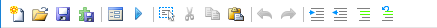

Toolbar¶

New (Ctrl + N)¶
Opens the New Document dialog, which allows for to configurable templates.
Open (Ctrl + O)¶
Display a dialog to choose a .cs file to load into CodeLab.
Save (Ctrl + S)¶
Saves the changes to the opened .cs file.
Build DLL (Ctrl + B)¶
Use this option when you are happy with your effect and want to make it a permanent part of your Paint.NET (or you want to share your effect with your friends). Be sure to save your script file (Ctrl+S) before saving as a DLL.
See this page for more details on creating DLL files for use with Paint.NET.
User Interface Designer (Ctrl + I)¶
Use this option before you start editing your Render function to design the user interface controls your effect will have.
See this page for more details on using CodeLab’s UI designer.
Preview Effect (Ctrl + P)¶
Displays the effect with it’s generated UI, and temporarily renders the effect to the Paint.net canvas.
Select All (Ctrl + A)¶
Highlights all the text in the code editor.
Cut (Ctrl + X)¶
This command deletes the currently selected code in the editor window and places a copy of the deleted code onto the clipboard.
Copy (Ctrl + C)¶
This command places a copy of the currently selected code in the editor window onto the clipboard. The currently selected code is NOT deleted.
Paste (Ctrl + V)¶
This command replaces the current selection with the code from the clipboard.
Undo (Ctrl + Z)¶
Steps backwards in the edit history of the document.
Redo (Ctrl + Y)¶
Steps forwards in the edit history of the document.
Indent (Tab)¶
If you have lines of code selected in the editor window, pressing the tab key will indent those lines by four spaces.
If only a partial line is selected, after pressing the tab key, the entire line will become selected.
Unindent (Shift + Tab)¶
If you have lines of code selected in the editor window, pressing the shift-tab key will unindent those lines by four spaces.
If only a partial line is selected, after pressing the shift-tab key, the entire line will become selected.
Comment Selection (Ctrl + K)¶
Prepends the selected lines with // to transform it into comment. Useful when wanting to temporarily disable part of your code.
Uncomment Selection (Ctrl + U)¶
Removes any prepended // from the selected lines.
Find (Ctrl + F)¶
Open the Find & Replace panel.
Replace (Ctrl + H)¶
Open the Find & Replace panel in expanded form.